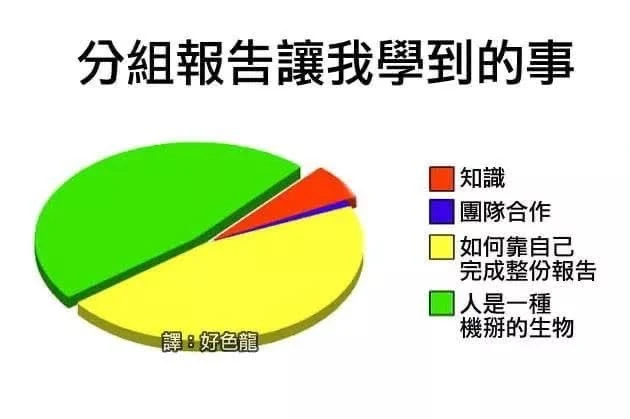

現場觀察
台積電築夢計畫說明會
一位香港僑生說，他希望爭取海外留學或工作的機會。主持人委婉回應：這個計畫想找的是「有夢想的人」，而不是求職導向。
「你的夢想，是否符合我們對夢想的想像？」
對某些學生而言，留學、工作與經濟安全是實現夢想前就具備的條件；對另一些人而言，跨越身分與資源限制，本身就是最迫切的夢想。
這是一次說明會中的觀察，還不能證明計畫偏好哪一種階級；它讓我開始把個人的表達能力，與家庭經濟、教育、外語能力及過往經驗連結起來。
社會學想像提醒我們：個人的選擇、能力或失敗，背後可能連著家庭資源、教育制度、職業結構、團體關係，以及整個時代。
02 / Field note
一位香港僑生說，他希望爭取海外留學或工作的機會。主持人委婉回應：這個計畫想找的是「有夢想的人」，而不是求職導向。
對某些學生而言，留學、工作與經濟安全是實現夢想前就具備的條件；對另一些人而言，跨越身分與資源限制，本身就是最迫切的夢想。
這是一次說明會中的觀察，還不能證明計畫偏好哪一種階級；它讓我開始把個人的表達能力，與家庭經濟、教育、外語能力及過往經驗連結起來。
03 / Before judging
除了「他就是懶惰、不負責任」，再多想一步，你的反應比較接近哪一句？

04 / 19th century Europe
工業革命讓商品、城市與選擇快速增加，也帶來低薪、惡劣居住環境、階級差距與陌生人社會。當宗教、家庭與地方共同體不再理所當然，社會要靠什麼維持秩序？
人們進入城市與工廠，原有的生活關係開始改變。
生產更快、城市更富，勞動條件與階級衝突也更明顯。
陌生人如何共同生活？社會如何維持連結與規範？
既然自然能被研究，貧窮、犯罪、自殺與社會秩序是否也可以？
05 / Three investigators
五個人一起做報告：四人分別查資料、整理內容、製作簡報與統整上台；第五位很少參與，只回過幾次「都可以」，最後沒有交出可用內容，也沒有上台或回答問題。共同評分卻讓五人拿到相同成績，其他四人因此認為他在搭便車。
06 / Compare
誰付出勞動、誰能決定、誰取得成果？制度能否被集體改變？
這是不是反覆出現的群體模式？背後有哪些社會原因？
你如何解釋自己的行動？這個意義造成了什麼結果？
07 / Many fields, one society
社會學的分化不只是列出有哪些科目，而是在回答研究者要從哪裡開始。隨著範圍擴大，社會學逐漸發展出教育、家庭、醫療、法律與性別等領域；同一份分組報告，也能研究教育制度、小團體互動、權力與社會化。
08 / Change the scale
制度會進入日常互動，而一次次互動也會維持或改變制度。
心理學可能先關心動機、情緒、認知與行為；社會學繼續追問家庭、團體、組織、文化與制度如何塑造行動。只看個人，可能把制度問題解釋成人格問題；只看制度，也可能忽略每個人如何理解自己的經驗。
09 / Keep questioning
準時交資料就算負責任嗎？做最多工作的人一定貢獻最大嗎？掌握所有決定權的人，又算不算好的合作對象？
下一章：文化——我們共同接受的玩法，從哪裡來？